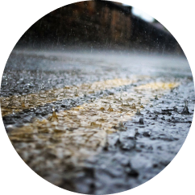
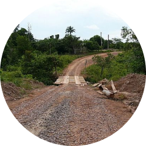
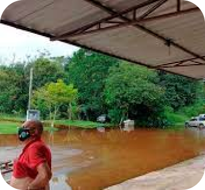
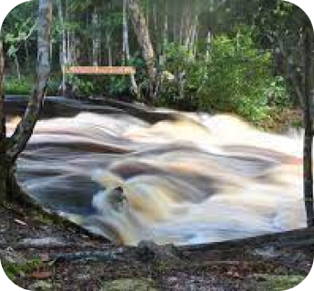

SE MOVENDO DO RURAL AO URBANO
As interações espaciais dos alunos do IFAM, Campus Presidente Figueiredo

Principais Dificuldades

Chuvas constantes e severas

Aréas rurais de difícil acesso
Proteção em meio a Pandemia
Analisando as interações espaciais
A presente pesquisa analisou as interações espaciais dos alunos do Instituto Federal de Educação, Ciência e Tecnologia do Amazonas – IFAM, que moram na zona rural do município de Presidente Figueiredo, em seus deslocamentos diários até a sede da instituição, no período pré-pandemia, bem como, o esforço de professores do IFAM para promover o processo de ensino e aprendizagem durante longos meses de pandemia.
Saiba mais!Conheça a história de Presidente Figueiredo
Uma das partes importantes para entender a pesquisa feita é conhecer o municipio onde ocorre o estudo

